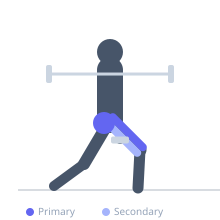

Exercise guide / Reverse Lunge
Reverse Lunge
The reverse lunge steps the foot backward rather than forward, reducing shear forces on the anterior knee compared to a forward lunge and improving stability. The front leg performs the primary work of controlled deceleration and propulsion. It is accessible to beginners and those with knee sensitivities, and can be heavily loaded with dumbbells or a barbell for significant lower body hypertrophy and strength development.
Primary muscles
rectus femoris
vastus lateralis
vastus medialis
gluteus maximus
Secondary muscles
biceps femoris long head
gluteus medius
Stabilizers
tensor fasciae latae
transverse abdominis
Equipment
No Equipment (Bodyweight)
Optional
Dumbbell (Fixed)
Standard Barbell


Starting position
- Stand tall with feet together. If using dumbbells, hold them at the sides. If using a barbell, hold it on the upper traps.
Setup
- Choose load based on goal. Bodyweight works for beginners. Dumbbells or barbell can be added progressively.
Steps
- Step 1: Stand with feet together, core braced, chest tall.
- Step 2: Take a controlled step backward with one foot, landing on the ball of that foot.
- Step 3: Lower the rear knee toward the floor while keeping the front shin as vertical as practical. The front knee tracks over the toes.
- Step 4: When the rear knee is 1–2 cm from the floor, drive through the front foot to return to standing.
- Step 5: Alternate legs each rep or complete all reps on one side before switching.
Coaching cues
- Step back far enough to keep the shin vertical
- Think: drop straight down, not forward
- Drive through the front heel to stand
Breathing
- Exhale as you return to standing. Inhale as you step back and lower.
Range of motion
- Rear knee should travel close to the floor (1–2 cm off) for full range. Front thigh reaches approximately parallel.
Tempo
- 2-0-1-0
Common mistakes
- Taking too short a step, causing the front knee to track far over the toe
- Letting the torso collapse forward instead of staying upright
- Allowing the rear knee to crash into the floor without control
Safety
- Keep the front shin vertical or close to it to reduce anterior knee stress
- Use a shorter step initially to establish the movement pattern before increasing stride length
Training
- strength: 5–8 reps
- hypertrophy: 10–15 reps
- endurance: 15–25 reps
- strength: 3–4 sets
- hypertrophy: 3–4 sets
- endurance: 2–3 sets
- Rest: {'strength': 120, 'hypertrophy': 60, 'endurance': 45}